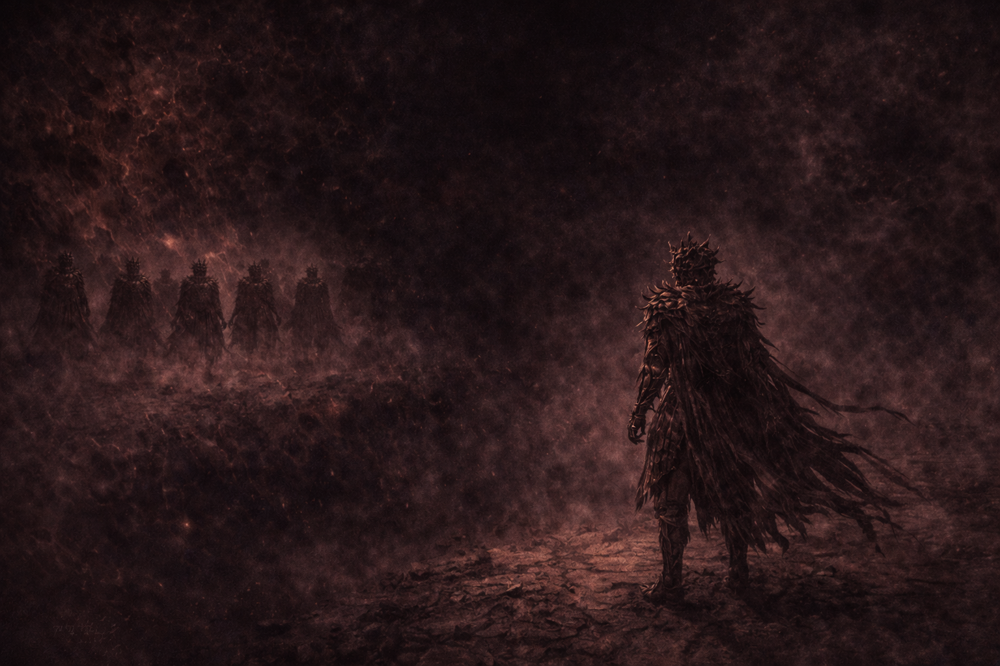
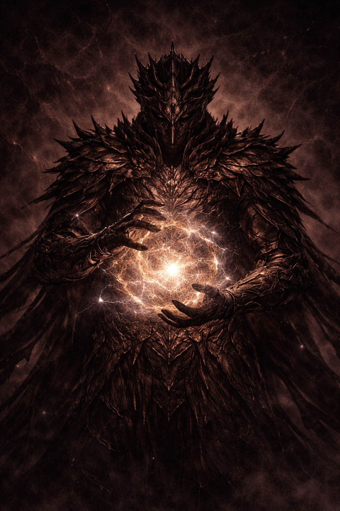
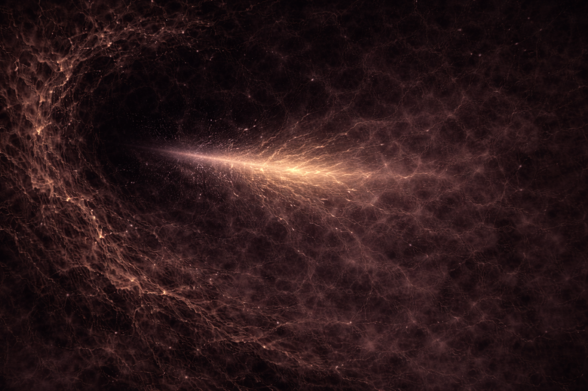
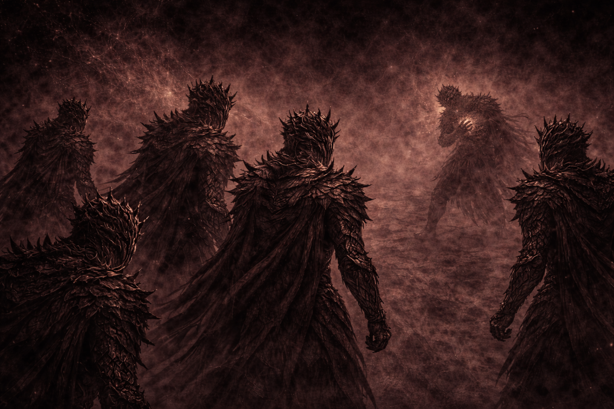
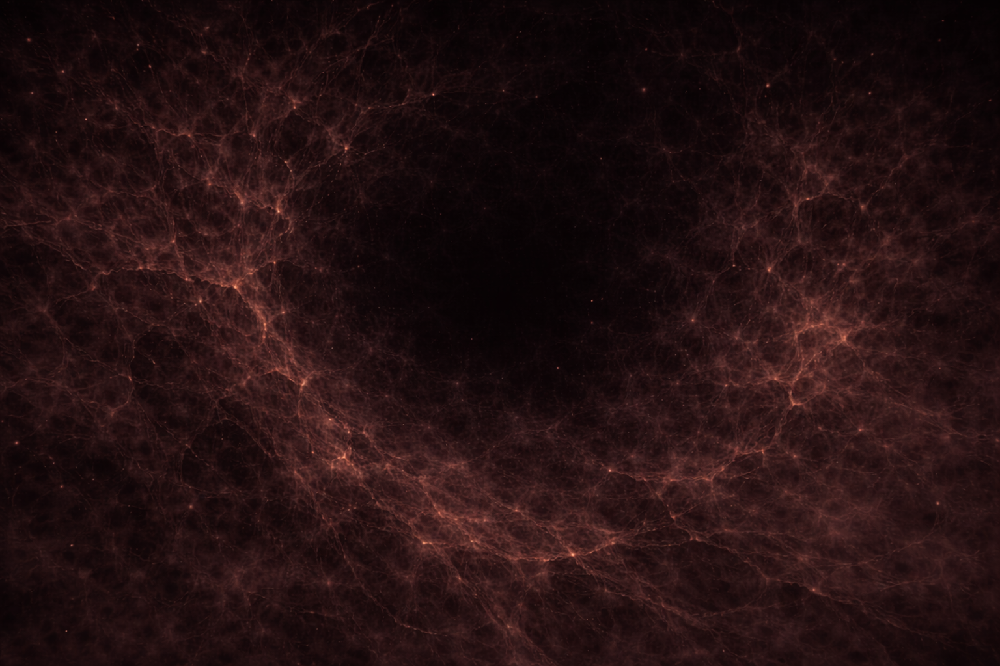
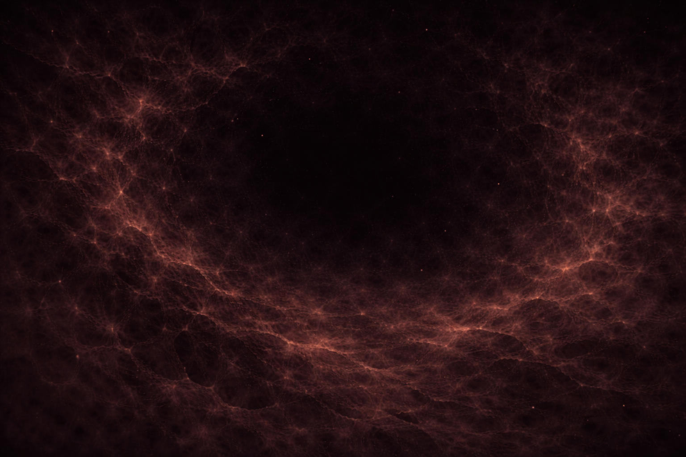

CHAPTER 20
The First Strike

One Sovereign stepped forward.
Not commanded.
Not supported.
The others did not stop them.
None knew how.

Power gathered carefully.
Not in excess.
Not in anger.
This was calculation.
Restraint was believed to matter.
The strike landed.
No resistance.
No collision.
The power entered.
And did not return.

Something changed.
Not violently.
Not visibly.
The void adjusted.
As if learning.
The Sovereign faltered.
Not from pain.
Not from backlash.
From understanding.
What was taken was permanent.

The others felt it.
A thinning.
A loss of definition.
One domain grew quieter.
Everywhere.

Nihilus did not appear.
But the space changed.
It behaved as if observed.
As if noted.
This was new.

They waited.
For retaliation.
For judgment.
None came.
Only certainty remained.
TO BE CONTINUED